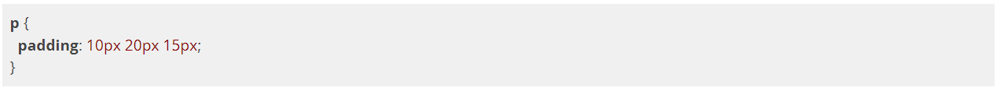
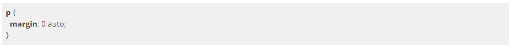

padding e margin, e para redimensionar elementos podemos usar as propriedades de largura e altura ou width e height. Vamos ver mais a fundo essas propriedades.
Dimensões
É possível determinar as dimensões de um elemento, por exemplo:
Todos os parágrafos do nosso HTML ocuparão 300 pixels de altura e de largura, com cor de fundo vermelha.

Espaçamentos
Padding
A propriedade padding é utilizada para definir um espaçamento interno em elementos (por espaçamento interno queremos dizer a distância entre o limite do elemento, sua borda, e seu respectivo conteúdo) e tem as subpropriedades listadas a seguir:
padding-top
padding-right
padding-bottom
padding-left
Essas propriedades aplicam uma distância entre o limite do elemento e seu conteúdo acima, à direita, abaixo e à esquerda respectivamente. Essa ordem é importante para entendermos como funciona a
shorthand property (encurtamento) do padding.
Se passado somente um valor para a propriedade
padding, esse mesmo valor é aplicado em todas as direções.
Se passados dois valores, o primeiro será aplicado acima e abaixo (equivalente a passar o mesmo valor para
padding-top e padding-bottom) e o segundo será aplicado à direita e à esquerda (equivalente ao mesmo valor para padding-right e padding-left).
Se passados três valores, o primeiro será aplicado acima (equivalente a
padding-top), o segundo será aplicado à direita e à esquerda (equivalente a passar o mesmo valor para padding-right e padding-left) e o terceiro valor será aplicado abaixo do elemento (equivalente a padding-bottom).

Se passados quatro valores, serão aplicados respectivamente a
padding-top, padding-right, padding-bottom e padding-left. Para facilitar a memorização dessa ordem, basta lembrar que os valores são aplicados em sentido horário.
Margin
A propriedade
margin é bem parecida com a propriedade padding, exceto que ela adiciona espaço após o limite do elemento, ou seja, é um espaçamento além do elemento em si (espaçamento externo). Além das subpropriedades listadas a seguir, há a shorthand property margin que se comporta da mesma maneira que a shorthand property do padding vista no tópico anterior.
margin-top
margin-right
margin-bottom
margin-left
Há ainda uma maneira de permitir que o navegador defina qual será a dimensão da propriedade
padding ou margin conforme o espaço disponível na tela: definimos o valor auto para os espaçamentos que quisermos.
